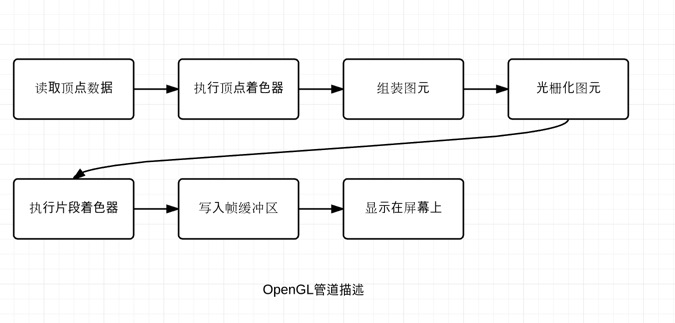

定点和着色器
OpenGl只能绘制点、直线及三角形,定义定点时总是以逆时针的顺序排列定点。这称为卷曲顺序。
告诉GPU如何绘制数据的东西被称为着色器。着色器分为顶点着色器(vertex shader)和片段着色器(fragment shader)

创建第一个顶点着色器
OpenGL会把gl_Position中的值当作当前定点的最终位置。
创建第一个片段着色器
OpenGl会把gl_FragColor的值作为当前片段的最终颜色
加载着色器
读入着色器代码
编译着色器
链接着色器
一个OpenGL程序就是把一个顶点着色器和一个片段着色器链接在一起变成单个对象，顶点着色器和片段着色器总是在一起工作的。片段着色器负责绘制那些组成每个点、直线和三角形的片段；顶点着色器确定在哪里绘制。
最后的拼接
- 获取一个
uniform的位置
- 获取属性的位置
- 关联属性和定点数据的数组
- 使能顶点数组
- 绘制
OpenGl如何把坐标映射到屏幕
OpenGl会把屏幕映射到x,y轴的[-1, 1]范围内，可以给gl_PointSize赋值来改变点的大小